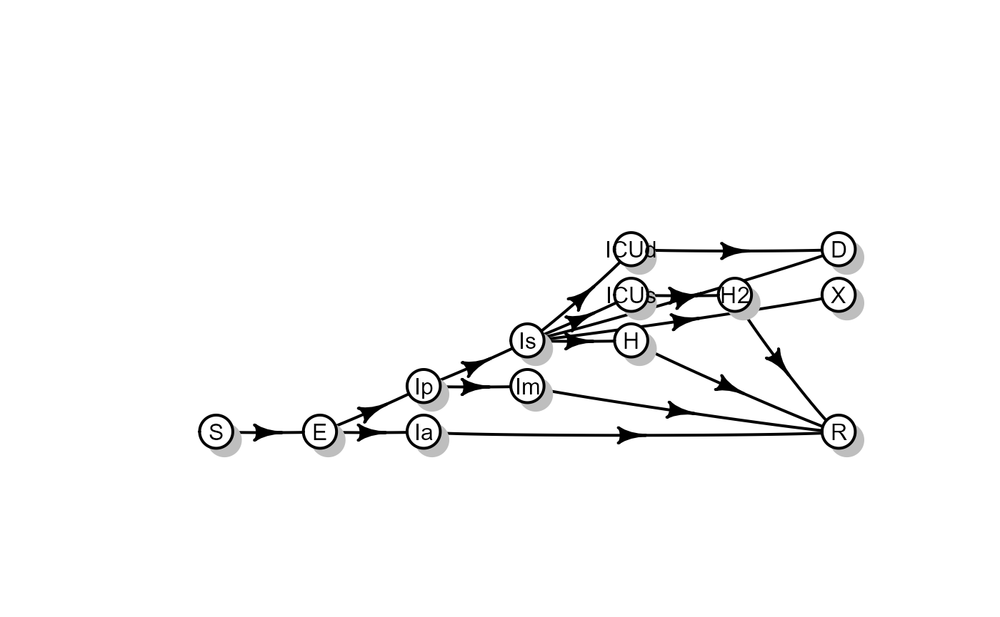
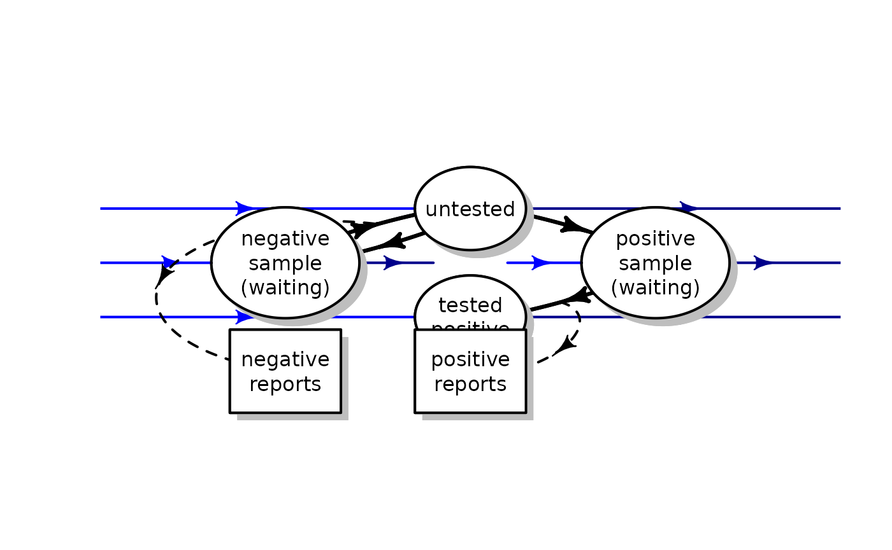
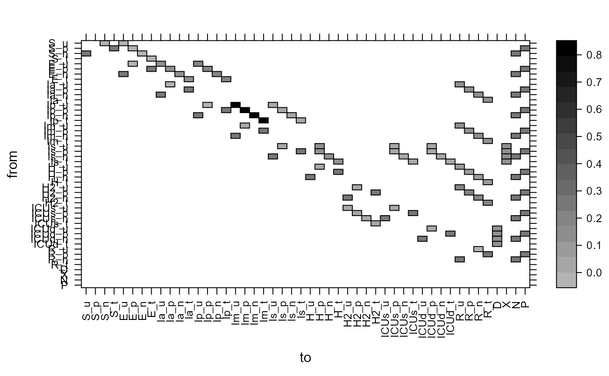

The “McMasterPandemic” model is a compartmental model built for the purposes of modeling the COVID-19 pandemic. Its main features are:
library(McMasterPandemic)
vis_model(method="diagram",do_symbols=FALSE)
## NULLTo incorporate testing and tracing mechanistically, we have expanded the basic model in order to be able to
Our basic approach is to add an additional set of compartments to our model, expanding each compartment into the following sub-compartments:
_u extension) People with negative test results move back into this category since they can be tested again if there are new reasons for the test._n extension) either because the tested individual was uninfected, or because of a lack of test sensitivity. We can assign compartment-specific probabilities of a positive test (low for \(S\) [currently set as 0], high for \(I\) compartments [currently set as 1], and possibly lower for non-symptomatic/early stages than for later stages)._p extensions) either because the tested individual was infected, or because of a lack of test specificity._t extension) Individuals who have a positive test will not be tested again, and may change their behaviour (isolate), depending on degree of compliance to public health advice.In addition to these compartments, we also add accumulator compartments for negative and positive test reports. The appropriate accumulator is incremented at an appropriate time.
_u to _n and _u to _p transitions_n to _u and _p to _t transitionsWe can then recover the daily numbers of negative and positive tests recorded by differencing the cumulative totals (and add observation error if desired).
## Loading required package: shape
Individuals can also move between epidemiological compartments while awaiting test results, e.g. from “presymptomatic, awaiting positive test results” (Ip_p) to “mild infection, awaiting positive test results” (Im_p). This does not change their testing status, except that when untested, severely symptomatic individuals are hospitalized for COVID, we assume they are tested immediately (i.e. `
In order to reflect the range of possible testing strategies, we assign a testing weight to each compartment in the model that specifies what fraction of the current testing intensity is allocated to that compartment. We take the current testing intensity \(T\) (overall per capita tests/day) as a model input. Then, given testing weights \(w_i\), the *per capita} rate at which individuals in epidemiological compartment \(i\) move from _u to _n or _p (awaiting test results) is \[\begin{equation}
\frac{T w_i}{\sum_j w_j P_j} \,,
\end{equation}\] where \(P_j\) is the proportion of the population in compartment \(i\). The weights depend on the testing strategy and population state in complicated ways; if only confirmatory testing is being done (no screening or contact tracing or surveillance testing), then the weights will be skewed toward symptomatic compartments – although not entirely, as observed test positivity rarely goes above 20%, and sensitivity is thought to be much higher than this. More contact tracing will increase the weights of non-symptomatically infected people. More random-surveillance testing will make the weights of all the groups more similar.
Including the testing structure increases the number of compartments substantially, and consequently yields a much larger flow matrix
vis_model(testify=TRUE,aspect="fill")
Explicit testing structure is enabled if the parameter vector/list contains an element testing_intensity which is set >0. (As a side note, if you are using read_params("PHAC_testify.csv") to capture our most recent set of default parameters, and you don’t want an explicit-testing model, you should use update(., testing_intensity=0).) The argument testing_time to the make_ratemat() function determines when testing is counted (“sample” or “report”); this can be passed to run_sim() (or from farther upstream) in the ratemat_args (list) argument; the default is to set counting time to “sample”, with a warning.
The ability to simulate/forecast
Given the large number of available simulators, why did we write another one?
Familiarity/convenience/speed and ease of implementation, debugging, maintenance are most important. For us, this rules out Julia and Python and strongly suggests R. Speed may eventually be important, for (1) running stochastic replicates and varying-parameter ensembles and (2) incorporating the model in simulation-based estimation methods (ABC, iterated filtering/pomp). If we are focused on estimation, we have a choice among Gibbs-based platforms (NIMBLE, JAGS) and platforms that only allow continuous latent variables (TMB, Stan).
odin, Rcpp). Lots of possibilities for vectorization and matrix operations to speed up base R implementations, although some operations like convolution might be hard to vectorize. pomp provides a Csnippets interface (used by the “COVID interventions” project). I am tempted by odin, a platform that allows translation/compilation in C++ via an R-like syntax, e.g. see the discrete-simulation vignette
Some of these are simple. Want to set up general structure for importing a dated list of changes in parameters (date, focal parameter, new value or proportional change). Testing rates can be included as part of this “non-autonomous”/forcing/external part of the parameterization.
10.1371/journal.pcbi.1005697; machine-readable info at https://doi.org/10.1371/journal.pcbi.1005697.s002)(not sure how important this is?)
Disadvantages of linear-chain and convolution models are speed and potentially complexity/transparency (modeling convolution with GI handles arbitrary distribution of infectiousness over time, but making it interact with testing and treatment pipelines seems complicated?)